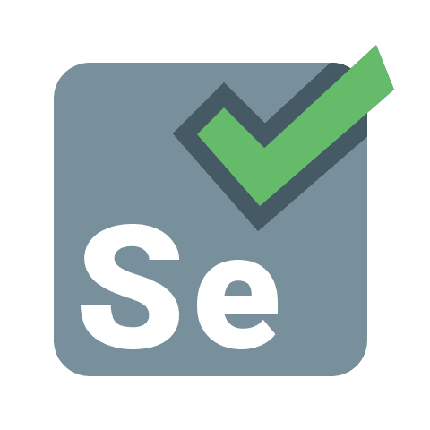
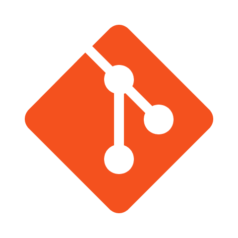

Hard Skills
Testes Automatizados: Ferramentas de software para executar scripts pré-programados que validam funcionalidades de forma rápida, repetitiva e sem intervenção humana, garantindo a confiabilidade do sistema.
Testes Manuais: Executa o software como um usuário final, seguindo roteiros para identificar falhas visuais, de usabilidade e comportamentos inesperados que a automação pode não captar.


